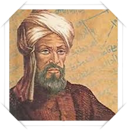

Culture erale
Al Khawarizmi
Muhammad Ibn Musa al-khawarizmi, eralement appee Al-Khwarizmin (latinie en Algoritmi1), e dans les anees 780, originaire de Khiva dans la egion du Khwarezm qui lui a done son nom, dans l'actuel Ouzekistann 2, mort vers 850 a Bagdad, est un matematicien, geographe, astrologue et astronome perse, membre de la Maison de la sagesse de Bagdad. Sesecrits, edies en langue arabe, puis traduits en latin a partir du xiie siecle, ont permis l'introduction de l'algebre en Europe1. Sa vie s'est erouee en totalie a lepoque de la dynastie abbasside. Son nom est a l'origine du mot algorithme4 et le titre de l'un de ses ouvrages (Abe du calcul par la restauration et la comparaison) a l'origine du mot algebre. L'utilisation des chiffres arabes et leur diffusion dans le Moyen-Orient et en Europe sont dues a un autre de ses livres nome Traie du systeme de nueration des Indiens qui fut diffue via la langue arabe dans tout l'empire abbasside. Al-Khawarizmi a classife les algorithmes existants, en particulier selon leurs criteres de terminaison, mais ne revendique pas leur invention : l'algorithme le plus connu du monde est celui d'Euclide, au programme d'enseignement de tous les pays, et les premiers algorithmes connus le furent sans surprise dans un pays devant erer des calculselaboes de l'impot : a Babylone5 Il ne faut pas confondre ce matematicien avec l'encycloediste perse, Muhammad ibn Ahmad al-Khwarizmi, auteur de Mafatih al-'Olum (Les ces des sciences), encycloedieecrite dans les anees 976-9976
Al Biruni

Al Biruni, Afzal Muhammad ibn Ahmad Abu al-Rehan2 (le 43,4 ou le 155 septembre 973 a Kath, Khwarezm ville de l'actuel Ouzekistan, mort le 13 ecembre 10484,5 ou vers 10523 a Ghazni) est unerudit khorezmien. Matematicien, astronome, physicien, encycloediste, philosophe, astrologue, voyageur, historien, pharmacologue et pecepteur, il contribua grandement aux domaines des matematiques, philosophie, edecine et des sciences. Il est connu pour avoiretude la these de la rotation de la Terre autour de son axe et sa evolution autour du Soleil.